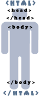

Главная | Оглавление | Словарь
Итак, для начала создай на диске отдельную директорию (папку) для будущей страницы (порядок прежде всего:).
D:\первые шаги\
Теперь откроем блокнот (notepad) и скопируем туда следующий текст:

<html>
<head>
<title>Мой первый шаг </title>
</head>
<body>
Здравствуйте, это моя первая страница.
<br>
Добро пожаловать! :)
</body>
</html> (прим.)
А теперь сохраним этот документ, присвоив ему имя *.html (прим.)
D:\первые шаги\index.html
Теперь откроем, допустим, Internet Explore (не закрывайте блокнот, он нам еще пригодится).
Файл - Открыть - кнопка Обзор - Наш документ (index.html).
Если мы чего-то изменили в нашем *.html документе (в блокноте), то, чтобы посмотреть как это выглядит в Internet Explorer, надо не забывать нажимать в IE (Internet Explorer) кнопку ОБНОВИТЬ (тоже самое касается других броузеров:) Если изменений не видно, то это значит, что вы где-то что-то неправильно написали, или забыли сохранить документ:)
Посмотрим теперь, что у нас получилось, и разберемся как оно так получилось:)